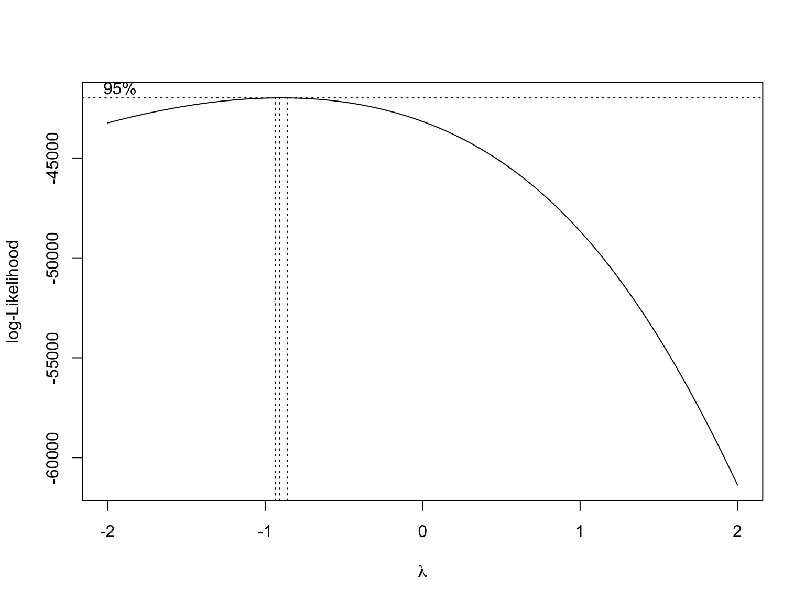
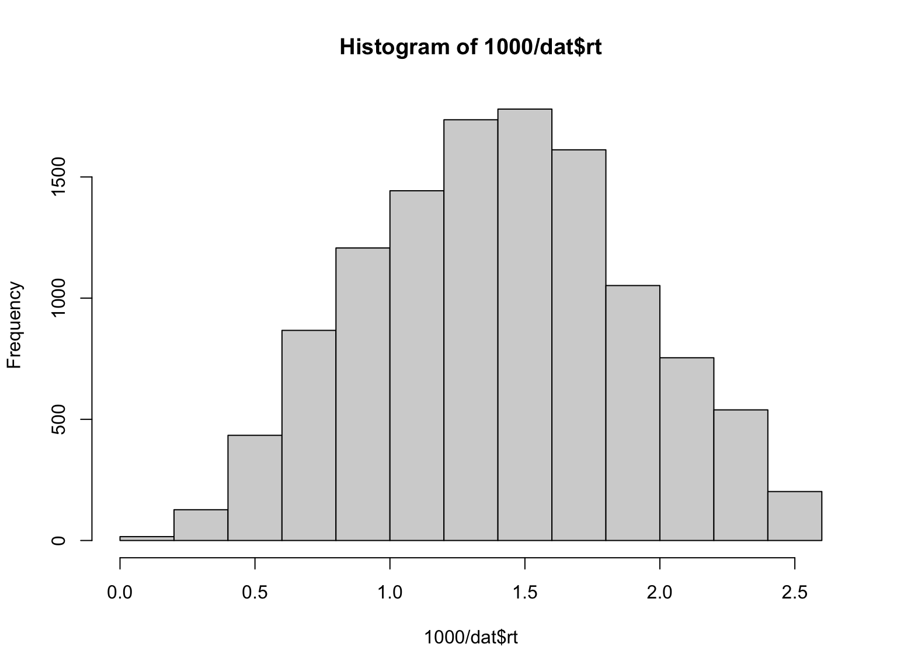
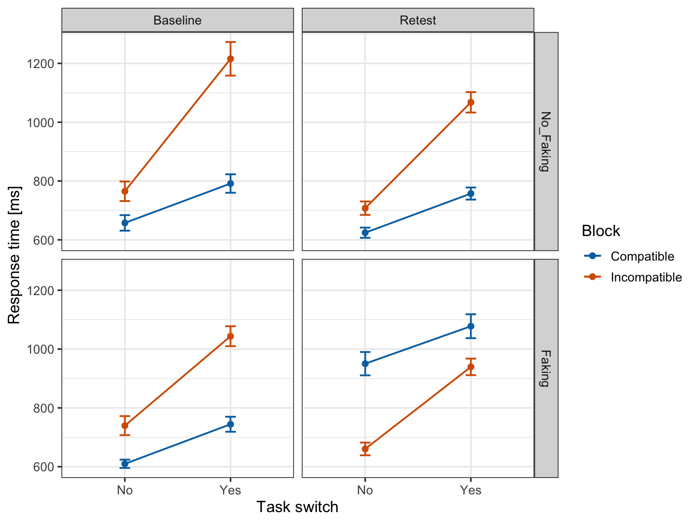
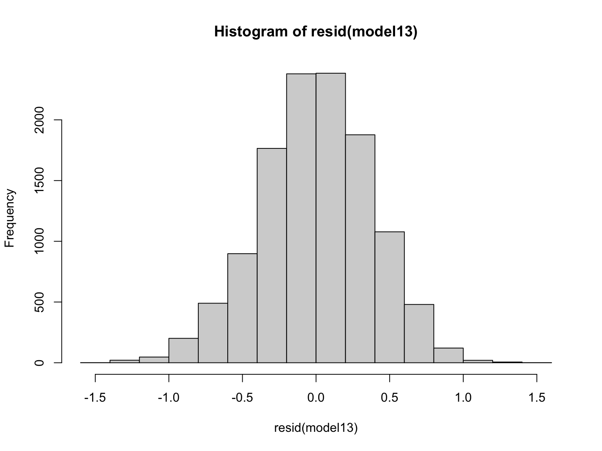
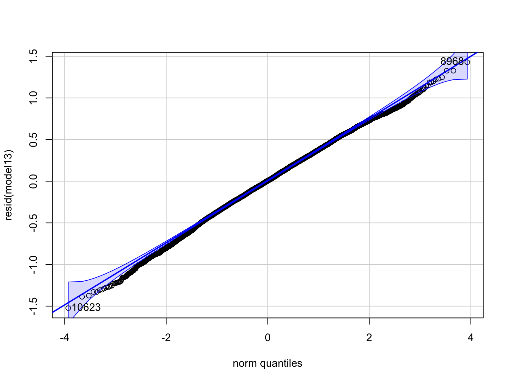
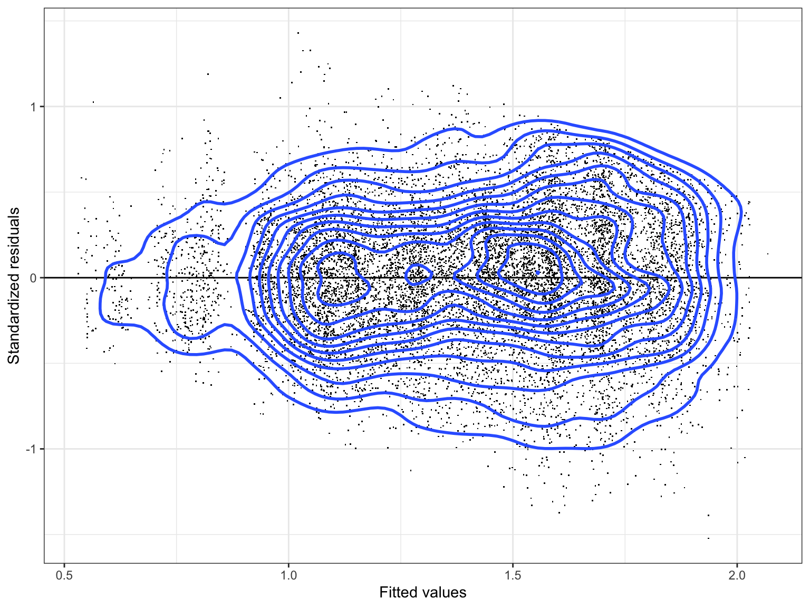
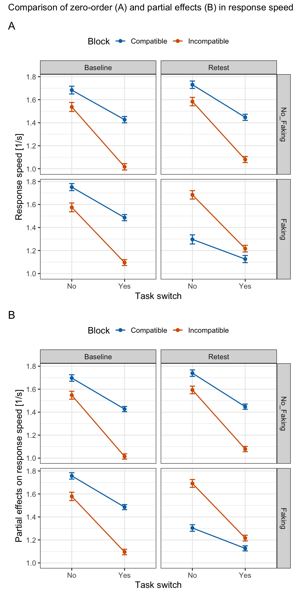
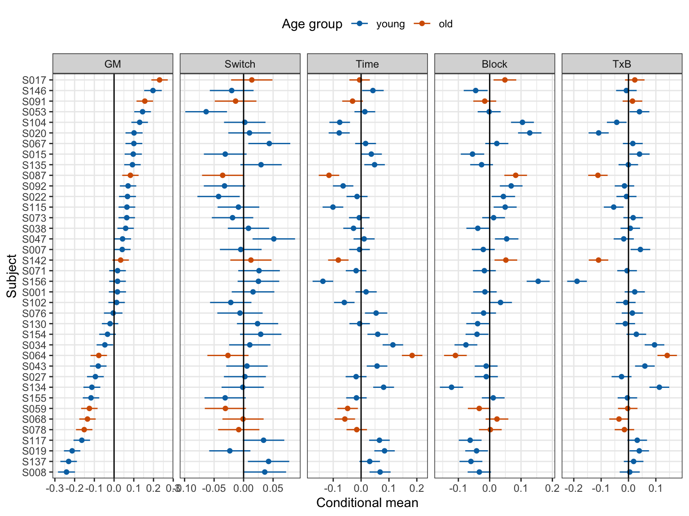

library(arrow)
suppressWarnings(suppressMessages(library(tidyverse)))
suppressWarnings(suppressMessages(library(easystats)))
library(summarytools)
library(lme4)
library(car)
library(GGally)
library(ellipse)
# respecting color vision deficiency
cbPalette <- c( "#0072B2", "#D55E00", "#009E73", "#CC79A7",
"#F0E442", "#56B4E9", "#999999", "#E69F00")Detecting Faked IATs via Task-Switch Costs
1 Anke Cajar (AC): Analysis/modeling issues
- Is the contrast coding appropriate?
- What is currently the best method for model selection (concerning questions like: from maximal to minimal model, doing rePCA, …)? Is the stuff from the RePsychLing package and vignettes still the way to do it?
- How do I make sure that the random effects structure of my selected model is really supported by the data (again, rePCA?)?
- How do I decide which optimizer to use for model fitting? I heard bobyqa is supposed to be good…
- It seems that the order in which I put the factors in the formula changes the outcome. How do I decide on the order (most important factor first, than second etc.?)?
- Model results (model 13) don’t really fit the mean response time/switch costs plot, as part of the effects you see in the figure goes into the random effects (By chance, there were more older subjects > 45 years in the no-faking group, who had considerably longer mean response times in the baseline IAT). How do I report this in a paper? Should I plot the fixed effects from the model instead of mean response times (which I’d rather not)?
2 Background and overview
- Data are from André Krügel.
- Revisions and additions for SMLP2022 by Reinhold Kliegl (RK)
- Revisions do not affect the main conclusion, but highlight common problems with fitting LMMs related to
- contrast specification
- convergence issue
- zero correlation parameters
- Addition of new chunks illustrate
- selection of parsimonious LMM using random-effects PCA (
rePCA()) and LRTs (anova()) - plotting partial effect of high-order interaction (
remef()) - plotting conditional means
- selection of parsimonious LMM using random-effects PCA (
2.1 Data
This is data from an experiment showing that we can reliably detect whether outcomes from the Implicit Association Test (IAT) are faked by analysing task-switch costs in the combined blocks of the IAT (see next paragraph) Every participant performed two IATs: the control group performed the same normative IAT twice and the faking group was instructed to fake the second IAT by deliberately slowing down response times in the compatible block. It has been shown that switches from a target-concept word to an attribute-dimension word between consecutive trials produces stronger switch costs (i.e., response-time differences between task-repetition and task-switch trials) in the incompatible block than in the compatible block. The present data show that even after successful faking of the IAT, these switch costs are preserved (although the true compatible block became the faked incompatible block). Thus, switch costs can be used to detect IAT faking reliably and with high accuracy.
2.2 IAT and faking strategies
The IAT measures people’s implicit associations between a target concept and an attribute dimension. People have to assign consecutively presented words as fast as possible to one of four categories—two categories belong to the target concept (e.g., family vs career words) and two categories belong to the attribute dimension (e.g., male vs female words). When strongly associated concepts share the same response key in the categorization task (e.g., career and male words or family and female words), response times are usually shorter than when less associated concepts share the same response key (e.g., career and female words or family and male words). The IAT block with shorter response times is called the compatible block, whereas the block with longer response times is called the incompatible block. IAT results can be deliberately faked, most easily and reliably by slowing down response times in the actual compatible block (making it look like the incompatible block and thus reversing associations). To date, an effective and accurate method for detecting faked IATs is still missing.
3 Readme
3.1 Design
- Design: 2 (B-Subj/W-Item) x 2 (W) x 2 (W) x 2 (W) factorial mixed design
- N trials: 38 Subj x 20 Item x 8 W-Item x 2 repetition of items = 12160
- N errors: 391 (3.2%)
- N observations: 12160-391=11769
3.2 Variables
Subj: Participant ID (renamed fromID; random factor)Item: Word ID (random factor)Group(between-Subj/within-Item):- No_Faking: control group, where people took the same normative IAT twice
- Faking: experimental group, where people were instructed to fake the retest IAT by slowing down response times in the compatible block
Time(within-Subj/within-Item):- Baseline: first IAT (normative IAT)
- Retest: second IAT (normative or faked, depending on Group)
Block(within-Subj/within-Item):- Compatible: IAT combined block with shorter response times
- Incompatible: IAT combined block with longer response times
Switch(renamed fromTaskSwitch; within-Subj/within-Item):- Yes: Switch from target concept to attribute dimension (or the other way around) from one trial to the next
- No: No switch from target concept to attribute dimension (or the other way around) from one trial to the next
rt: trial response time (DV, renamed fromRT)
4 Load packages
5 Preprocessing
5.1 Trial data
- Random factors should be factors, not integers!
- RK style preferences
- Factors capitalized, continuous variables in lower case
Subjinstead ofID; prefix subject and item numbers withSandI- Short variable names and factor levels, but respect tradeoff with mmemonic value
- Labels should be of equal length
- Hint: Leave out vowels in names and labels
- See Jenny Bryan’s Naming Things
iat <-
read.table("./data/IAT_data.dat", header=TRUE, stringsAsFactors=TRUE) |>
rename("Subj" = "ID", "rt" = "RT", "Switch" = "TaskSwitch") |>
mutate(
Group = relevel(Group, ref="No_Faking"),
Subj = factor(paste0("S", str_pad(Subj, width = 3, side = "left", pad = "0"))),
Item = factor(paste0("I", str_pad(Item, width = 2, side = "left", pad = "0")))
) |>
filter(rt >= 400 & rt <= 10000) |>
as_tibble()
stview(dfSummary(iat), method="render")Data Frame Summary
iat
Dimensions: 11769 x 7Duplicates: 16
| No | Variable | Stats / Values | Freqs (% of Valid) | Graph | Valid | Missing | |||||||||||||||||||||||||||||||||||||||||||||||||||||||
|---|---|---|---|---|---|---|---|---|---|---|---|---|---|---|---|---|---|---|---|---|---|---|---|---|---|---|---|---|---|---|---|---|---|---|---|---|---|---|---|---|---|---|---|---|---|---|---|---|---|---|---|---|---|---|---|---|---|---|---|---|---|
| 1 | Subj [factor] |
|
|
![](data:image/png;base64, iVBORw0KGgoAAAANSUhEUgAAAHsAAAELCAQAAABTmzGBAAAAAmJLR0QA/4ePzL8AAAAHdElNRQfmCBkSLDb4gYjCAAABz0lEQVR42u3awU0CYRRG0YehR4uwHu3BKnWhMYPCTkLy7jk7wmZu+GdIvszpY4qeHn0BsmXf2/n44e3nRn85PfrC/t/xKXa+/Op5ZmbeH32Fdxc95LJLZJfILpFdIrtEdonsEtkl0exfo9L+OenL6TisLdwND46l0UMezb64t19X7+Q3s+3ky8kukV0iu0R2iewS2SWyS2SXRLPt5Hby9aLZdvIZO/lysktkl8gukV0iu0R2iewS2SXRbDu5nXy9aPbVnXz7Sv7n137+Xsq3ix5y2SWyS2SXyC6RXSK7RHaJ7BKDscF4Pdkl3ief8T75crJLZJfILpFdIrtEdonsEtkldnI7+XrRbIPxjMF4Odklsktkl8gukV0iu0R2ieySaLad3E6+XjTbTj5jJ19OdonsEtklsktkl8gukV0iuySabSe3k68XzbaTz9jJl5NdIrtEdonsEtklsktkl8guiWbbye3k60Wz7eQzdvLlZJfILpFdIrtEdonsEtklskui2XZyO/l60Ww7+YydfDnZJbJLZJfILpFdIrtEdonsEoOxwXg92SU3dvKVDo+uqzv5Rpf/UdFDLrtEdonsEtklsktkl8gukV1iJy+JHnLZJZ/zX0DFRz+sIQAAACV0RVh0ZGF0ZTpjcmVhdGUAMjAyMi0wOC0yNVQxODo0NDo1NCswMDowMEeZNLIAAAAldEVYdGRhdGU6bW9kaWZ5ADIwMjItMDgtMjVUMTg6NDQ6NTQrMDA6MDA2xIwOAAAAPXRFWHRpY2M6Y29weXJpZ2h0AENvcHlyaWdodCAyMDA3IEFwcGxlIEluYy4sIGFsbCByaWdodHMgcmVzZXJ2ZWQunmbcKQAAACN0RVh0aWNjOmRlc2NyaXB0aW9uAEdlbmVyaWMgUkdCIFByb2ZpbGUapziOAAAAAElFTkSuQmCC) |
11769 (100.0%) | 0 (0.0%) | |||||||||||||||||||||||||||||||||||||||||||||||||||||||
| 2 | Item [factor] |
|
|
 |
11769 (100.0%) | 0 (0.0%) | |||||||||||||||||||||||||||||||||||||||||||||||||||||||
| 3 | Time [factor] |
|
|
 |
11769 (100.0%) | 0 (0.0%) | |||||||||||||||||||||||||||||||||||||||||||||||||||||||
| 4 | Group [factor] |
|
|
 |
11769 (100.0%) | 0 (0.0%) | |||||||||||||||||||||||||||||||||||||||||||||||||||||||
| 5 | Block [factor] |
|
|
|
11769 (100.0%) | 0 (0.0%) | |||||||||||||||||||||||||||||||||||||||||||||||||||||||
| 6 | Switch [factor] |
|
|
 |
11769 (100.0%) | 0 (0.0%) | |||||||||||||||||||||||||||||||||||||||||||||||||||||||
| 7 | rt [integer] |
|
1664 distinct values |  |
11769 (100.0%) | 0 (0.0%) |
Generated by summarytools 1.0.1 (R version 4.2.1)
2022-08-25
factor()generates alphabetic sorting of factor leveks;as_factor()sorts them by occurrence.- See IAT scoring procedure from Greenwald et al. (2003) for removal of
rtoutliers.
5.2 Subject data
- Rename variables
- Convert types
- Add membership in experimental
Group - Replace missing
agewith median and missingGenderwith mode
sinfo <-
read.table("./data/IAT_subj.dat", header=TRUE, stringsAsFactors=FALSE) |>
rename(Subj=ID, age=Age) |>
mutate(Subj = factor(paste0("S", str_pad(Subj, width = 3, side = "left", pad = "0"))))
sGroup <- iat |> count(Subj, Group)
sinfo <-
sinfo |>
left_join(sGroup, by="Subj") |>
mutate(age = ifelse(is.na(age),median(age, na.rm = TRUE), age),
Gender = as_factor(ifelse(is.na(Gender), "female", Gender)))
stview(dfSummary(sinfo), method="render")Data Frame Summary
sinfo
Dimensions: 38 x 5Duplicates: 0
| No | Variable | Stats / Values | Freqs (% of Valid) | Graph | Valid | Missing | |||||||||||||||||||||||||||||||||||||||||||||||||||||||
|---|---|---|---|---|---|---|---|---|---|---|---|---|---|---|---|---|---|---|---|---|---|---|---|---|---|---|---|---|---|---|---|---|---|---|---|---|---|---|---|---|---|---|---|---|---|---|---|---|---|---|---|---|---|---|---|---|---|---|---|---|---|
| 1 | Subj [factor] |
|
|
![](data:image/png;base64, iVBORw0KGgoAAAANSUhEUgAAAHsAAAELCAQAAABTmzGBAAAAAmJLR0QA/4ePzL8AAAAHdElNRQfmCBkSLDb4gYjCAAABw0lEQVR42u3YQUoDURRFwRfJHl2E69E9uEodCNIJZmZoeKdqFjL5B353w718TdHL2QeQLfvZrscfH78P+tvl7IP9v+Nb7Hr71+vMzHyefcKni15y2SWyS2SXyC6RXSK7RHaJ7JJo9t2otH9O+nE5DmsLd8ODY2n0kkezb57t99U7+cNsO/lysktkl8gukV0iu0R2iewS2SXRbDu5nXy9aLadfMZOvpzsEtklsktkl8gukV0iu0R2STTbTm4nXy+abSefsZMvJ7tEdonsEtklsktkl8gukV1iMDYYrye7xE4+YydfTnaJ7BLZJbJLZJfILpFdIrvETm4nXy+abTCeMRgvJ7tEdonsEtklsktkl8gukV0SzbaT28nXi2bbyWfs5MvJLpFdIrtEdonsEtklsktkl0Sz7eR28vWi2XbyGTv5crJLZJfILpFdIrtEdonsEtkl0Ww7uZ18vWi2nXzGTr6c7BLZJbJLZJfILpFdIrtEdkk0205uJ18vmm0nn7GTLye7RHaJ7BLZJbJLZJfILpFdYjA2GK8nu+TBTr7S4dX1506+0e03KnrJZZfILpFdIrtEdonsEtklskvs5CXRSy675BsU7EEZwNuoUwAAACV0RVh0ZGF0ZTpjcmVhdGUAMjAyMi0wOC0yNVQxODo0NDo1NCswMDowMEeZNLIAAAAldEVYdGRhdGU6bW9kaWZ5ADIwMjItMDgtMjVUMTg6NDQ6NTQrMDA6MDA2xIwOAAAAPXRFWHRpY2M6Y29weXJpZ2h0AENvcHlyaWdodCAyMDA3IEFwcGxlIEluYy4sIGFsbCByaWdodHMgcmVzZXJ2ZWQunmbcKQAAACN0RVh0aWNjOmRlc2NyaXB0aW9uAEdlbmVyaWMgUkdCIFByb2ZpbGUapziOAAAAAElFTkSuQmCC) |
38 (100.0%) | 0 (0.0%) | |||||||||||||||||||||||||||||||||||||||||||||||||||||||
| 2 | age [numeric] |
|
22 distinct values |  |
38 (100.0%) | 0 (0.0%) | |||||||||||||||||||||||||||||||||||||||||||||||||||||||
| 3 | Gender [factor] |
|
|
 |
38 (100.0%) | 0 (0.0%) | |||||||||||||||||||||||||||||||||||||||||||||||||||||||
| 4 | Group [factor] |
|
|
 |
38 (100.0%) | 0 (0.0%) | |||||||||||||||||||||||||||||||||||||||||||||||||||||||
| 5 | n [integer] |
|
20 distinct values |  |
38 (100.0%) | 0 (0.0%) |
Generated by summarytools 1.0.1 (R version 4.2.1)
2022-08-25
5.3 Item data
- Item categories:
- Task (target concept vs. attribute)
- Valence (positive vs. negative words, included as nested within levels of
Task
items <-
read.table("./data/IAT_item.dat", header=TRUE, encoding = "UTF-8") |>
mutate(
Task = as_factor(if_else(Item <=10, "target", "attribute")),
Valence = as_factor(if_else(Item <= 5 | (Item >=11 & Item <= 15), "+", "-")),
Item = factor(paste0("I", str_pad(Item, width = 2, side = "left", pad = "0")))
)
stview(dfSummary(items), method="render")Data Frame Summary
items
Dimensions: 20 x 4Duplicates: 0
| No | Variable | Stats / Values | Freqs (% of Valid) | Graph | Valid | Missing | |||||||||||||||||||||||||||||||||||||||||||||||||||||||
|---|---|---|---|---|---|---|---|---|---|---|---|---|---|---|---|---|---|---|---|---|---|---|---|---|---|---|---|---|---|---|---|---|---|---|---|---|---|---|---|---|---|---|---|---|---|---|---|---|---|---|---|---|---|---|---|---|---|---|---|---|---|
| 1 | Item [factor] |
|
|
|
20 (100.0%) | 0 (0.0%) | |||||||||||||||||||||||||||||||||||||||||||||||||||||||
| 2 | Word [character] |
|
|
|
20 (100.0%) | 0 (0.0%) | |||||||||||||||||||||||||||||||||||||||||||||||||||||||
| 3 | Task [factor] |
|
|
|
20 (100.0%) | 0 (0.0%) | |||||||||||||||||||||||||||||||||||||||||||||||||||||||
| 4 | Valence [factor] |
|
|
|
20 (100.0%) | 0 (0.0%) |
Generated by summarytools 1.0.1 (R version 4.2.1)
2022-08-25
5.4 Combine data
The dataframe will be used in analyses with MixedModels.jl in Julia.
dat <-
iat |>
left_join(sinfo, by=c( "Group", "Subj")) |>
left_join(items, by="Item") |>
select(Subj, Gender, age, Item, Word, Task, Valence, Group, Time, Block, Switch, rt)
write_feather(dat, "./data/Cajar_IAT.arrow")Separate files for data, subject info, and item info are easier to maintain and are preferred for storage in a public repository. The information can be combined as needed. The redundant format of one integrated file chosen here is to facilitate transition to working with Julia MixedModels.jl at SMLP2022.
5.5 Check distribution of rt’s
lambdaList <- MASS::boxcox(lm(rt ~ Group*Time*Block*Switch, data=dat))
(lambda <- lambdaList$x[which.max(lambdaList$y)]) [1] -0.9090909hist(1000/dat$rt)
dat$speed <- 1000/dat$rtThe check suggests reciprocal transformation of rt, that is to use speed.
6 Plot switch costs
RK: Put Time on blocks of x-axis?
switch_costs <- dat|>
group_by(Time, Group, Block, Switch)|>
summarise(M = mean(rt), SD=sd(rt), N=n(), SE=SD/sqrt(N))`summarise()` has grouped output by 'Time', 'Group', 'Block'. You can override
using the `.groups` argument.fig_rt <- ggplot(switch_costs, aes(x=Switch, y=M, color=Block)) +
geom_point(size=2) +
geom_line(size=0.7, aes(group=Block)) +
geom_errorbar(aes(ymin=M-2*SE, ymax=M+2*SE), width=.1, size=0.7) +
facet_grid(Group~Time) +
scale_color_manual("Block", values=cbPalette) +
labs(x="Task switch", y="Response time [ms]") +
theme_bw(base_size=13)
print(fig_rt)
7 AC’s model selection (revised)
This section reproduces logic of the original model selection, but where necessary with corrected LMM syntax.
7.1 Define contrasts
ctable(dat$Group, dat$Time)Cross-Tabulation, Row Proportions
Group * Time
Data Frame: dat
----------- ------ -------------- -------------- ----------------
Time Baseline Retest Total
Group
No_Faking 2942 (50.1%) 2925 (49.9%) 5867 (100.0%)
Faking 2959 (50.1%) 2943 (49.9%) 5902 (100.0%)
Total 5901 (50.1%) 5868 (49.9%) 11769 (100.0%)
----------- ------ -------------- -------------- ----------------ctable(dat$Switch, dat$Block)Cross-Tabulation, Row Proportions
Switch * Block
Data Frame: dat
-------- ------- -------------- -------------- ----------------
Block Compatible Incompatible Total
Switch
No 2711 (50.2%) 2694 (49.8%) 5405 (100.0%)
Yes 3180 (50.0%) 3184 (50.0%) 6364 (100.0%)
Total 5891 (50.1%) 5878 (49.9%) 11769 (100.0%)
-------- ------- -------------- -------------- ----------------contrasts(dat$Group) <- contr.treatment(2)
contrasts(dat$Time) <- contr.treatment(2)
contrasts(dat$Block) <- contr.sum(2)/-2
contrasts(dat$Switch) <- contr.sum(2)/-2RK:
- If you mix treatment and sum contrasts in the context of multifactorial experiments you really need to know what the coefficients are estimating. They are not representing the usual ANOVA main effects and interactions.
- The contrasts are not orthogonal. This means you are bound to lose statistical power, except for contrasts that map directly on your hypotheses.
- For hypothesis-guided contrast specification (recommended!) it may be better to explicitly specify the model matrix, rather than relying on a mixture of canned contrasts.
- In the revision I use sum contrasts. They are orthogonal when all factors of have two levels. A direct comparison of the revised selected LMM
model13with the one based on treatment contrasts is provided in the Appendix. - Order of factor levels. The order of factor levels is relevant for figures and tables. I prefer time and difficulty shown in a left-to-right or top-to-bottom order. The order chosen here is in agreement with this preference:
- Order of factor levels also determines the signs of effects estimated in LMMs – unless explicitly specified. In general, I prefer a specification that yields positive effects, but order by time and difficulty may generate a conflict in this respect.
- For sum contrasts division by (-2) yields estimates of the difference between levels (instead of differences from Grand Mean) and the sign of the effects is reversed (i.e., Switch: yes - no; Block: incompatible - compaible). The division by 2 is strongly discouraged by Douglas Bates because indicators for higher order interaction terms become very small. Since we analyze response speed these effects are expected to be negative. Therefore, for my own model selection (see below), I will not divide by 2 and I will not reverse the direction of effects for sum contrasts.
7.2 Models that do not (or did not) converge
- AC: I tried model selection by starting with the maximal model and working my way down to the minimal model.
- RK. Some convergence issues were due to false positives. Double-bar syntax does not work with factors; you need to convert to indicator variables – see next chunk.
mm <- model.matrix(~ 1 + Group*Time*Block*Switch, data=dat)
gr <- mm[,2]
tm <- mm[,3]
bl <- mm[,4]
sw <- mm[,5] - RK: Always use
control=lmerControl(calc.derivs=FALSE). Most convergence warnings are false positives. - RK:
Groupis a within-item factor; added as item-related VC. - RK: Save objects that take a long time to fit to be available for quick load later.
- RK: Add LRTs for model comparisons (i.e.,
anova())
f1 <- "./fits/model1.rda"
if(!file.exists(f1)){
model1 <- lmer(speed ~ 1 + Group*Time*Block*Switch +
(1 + Time*Block*Switch|Subj) +
(1 + Group*Time*Block*Switch|Item),
data=dat, REML=FALSE, control=lmerControl(calc.derivs=FALSE))
save(model1, file=f1)
} else load(f1)
summary(rePCA(model1)) # definitely overparameterized in Item, probably also in Subj$Subj
Importance of components:
[,1] [,2] [,3] [,4] [,5] [,6] [,7]
Standard deviation 0.7890 0.5034 0.4059 0.19518 0.17993 0.10328 0.06773
Proportion of Variance 0.5527 0.2250 0.1462 0.03382 0.02874 0.00947 0.00407
Cumulative Proportion 0.5527 0.7777 0.9239 0.95772 0.98646 0.99593 1.00000
[,8]
Standard deviation 7.902e-05
Proportion of Variance 0.000e+00
Cumulative Proportion 1.000e+00
$Item
Importance of components:
[,1] [,2] [,3] [,4] [,5] [,6] [,7]
Standard deviation 0.7788 0.3155 0.21114 0.15068 0.13482 0.05255 0.002507
Proportion of Variance 0.7636 0.1253 0.05613 0.02858 0.02288 0.00348 0.000010
Cumulative Proportion 0.7636 0.8889 0.94505 0.97363 0.99651 0.99999 0.999990
[,8] [,9] [,10] [,11] [,12] [,13]
Standard deviation 0.00149 0.001134 0.0006525 0.0004157 0.0001883 8.655e-05
Proportion of Variance 0.00000 0.000000 0.0000000 0.0000000 0.0000000 0.000e+00
Cumulative Proportion 1.00000 1.000000 1.0000000 1.0000000 1.0000000 1.000e+00
[,14] [,15] [,16]
Standard deviation 6.228e-05 8.605e-06 0
Proportion of Variance 0.000e+00 0.000e+00 0
Cumulative Proportion 1.000e+00 1.000e+00 1VarCorr(model1) Groups Name Std.Dev. Corr
Subj (Intercept) 0.176132
Time2 0.137084 -0.376
Block1 0.081552 -0.249 0.078
Switch1 0.067353 -0.120 0.345 -0.260
Time2:Block1 0.251775 0.282 -0.814 -0.337 0.060
Time2:Switch1 0.030423 0.311 -0.768 -0.175 -0.146
Block1:Switch1 0.106526 -0.247 0.015 0.621 -0.219
Time2:Block1:Switch1 0.140614 0.125 0.614 -0.244 0.450
Item (Intercept) 0.033383
Group2 0.013518 -0.842
Time2 0.022327 -0.782 0.710
Block1 0.052107 0.193 0.028 -0.047
Switch1 0.029923 -0.101 0.554 0.263 -0.110
Group2:Time2 0.018714 0.370 -0.312 -0.727 0.412
Group2:Block1 0.056356 -0.595 0.553 0.693 -0.180
Time2:Block1 0.083064 -0.546 0.187 0.360 -0.814
Group2:Switch1 0.054139 0.010 -0.314 -0.200 0.268
Time2:Switch1 0.021431 0.706 -0.847 -0.648 0.089
Block1:Switch1 0.115563 -0.139 0.398 0.021 -0.524
Group2:Time2:Block1 0.089753 0.859 -0.718 -0.651 0.328
Group2:Time2:Switch1 0.059344 0.102 0.155 -0.034 -0.502
Group2:Block1:Switch1 0.136108 -0.023 -0.256 -0.159 0.318
Time2:Block1:Switch1 0.141394 -0.100 -0.105 -0.031 0.576
Group2:Time2:Block1:Switch1 0.166251 -0.112 0.250 0.091 -0.432
Residual 0.372661
0.596
-0.277 0.082
-0.351 -0.685 -0.659
-0.367
0.274 -0.480
-0.121 -0.368 0.562
-0.776 0.413 -0.618 -0.175
-0.554 0.235 -0.375 -0.238 0.187
0.760 -0.210 0.423 0.343 -0.850 -0.329
-0.151 0.358 -0.856 -0.703 0.367 0.491 -0.423
0.721 -0.311 0.426 0.277 -0.936 -0.096 0.935 -0.265
-0.740 0.375 -0.616 -0.230 0.993 0.172 -0.857 0.355 -0.950
-0.683 0.362 -0.453 -0.376 0.903 0.153 -0.885 0.251 -0.972 0.936
0.511 -0.260 0.692 0.443 -0.904 -0.064 0.862 -0.559 0.904 -0.919 -0.862
# Replace factor with indicator variables in RES
f2 <- "./fits/model2.rda"
if(!file.exists(f2)){
model2 <- lmer(speed ~ 1 + Group*Time*Block*Switch +
(1 + tm*bl*sw||Subj) +
(1 + gr*tm*bl*sw||Item),
data=dat, REML=FALSE, control=lmerControl(calc.derivs=FALSE))
save(model2, file=f2)
} else load(f2)
summary(rePCA(model2)) # Still overparameterized for Subj and Item$Subj
Importance of components:
[,1] [,2] [,3] [,4] [,5] [,6] [,7]
Standard deviation 0.6438 0.4638 0.3583 0.22459 0.20771 0.20340 0.1789
Proportion of Variance 0.4481 0.2326 0.1388 0.05454 0.04665 0.04473 0.0346
Cumulative Proportion 0.4481 0.6807 0.8195 0.87401 0.92066 0.96540 1.0000
[,8]
Standard deviation 1.109e-05
Proportion of Variance 0.000e+00
Cumulative Proportion 1.000e+00
$Item
Importance of components:
[,1] [,2] [,3] [,4] [,5] [,6] [,7]
Standard deviation 0.1322 0.1245 0.08653 0.08049 0.05687 0.04670 0.04073
Proportion of Variance 0.3207 0.2846 0.13744 0.11893 0.05936 0.04004 0.03045
Cumulative Proportion 0.3207 0.6052 0.74269 0.86162 0.92098 0.96102 0.99147
[,8] [,9] [,10] [,11] [,12] [,13] [,14]
Standard deviation 0.02133 0.003111 0.0001934 2.714e-05 0 0 0
Proportion of Variance 0.00835 0.000180 0.0000000 0.000e+00 0 0 0
Cumulative Proportion 0.99982 1.000000 1.0000000 1.000e+00 1 1 1
[,15] [,16]
Standard deviation 0 0
Proportion of Variance 0 0
Cumulative Proportion 1 1VarCorr(model2) Groups Name Std.Dev.
Subj (Intercept) 1.7362e-01
Subj.1 tm 1.3413e-01
Subj.2 bl 7.7763e-02
Subj.3 sw 6.6971e-02
Subj.4 tm:bl 2.4101e-01
Subj.5 tm:sw 4.1517e-06
Subj.6 bl:sw 7.6147e-02
Subj.7 tm:bl:sw 8.4081e-02
Item (Intercept) 2.1290e-02
Item.1 gr 0.0000e+00
Item.2 tm 0.0000e+00
Item.3 bl 3.2394e-02
Item.4 sw 7.9846e-03
Item.5 gr:tm 0.0000e+00
Item.6 gr:bl 1.7484e-02
Item.7 tm:bl 3.0134e-02
Item.8 gr:sw 0.0000e+00
Item.9 tm:sw 0.0000e+00
Item.10 bl:sw 4.9481e-02
Item.11 gr:tm:bl 1.0159e-05
Item.12 gr:tm:sw 1.5249e-02
Item.13 gr:bl:sw 7.2407e-05
Item.14 tm:bl:sw 4.6614e-02
Item.15 gr:tm:bl:sw 1.1647e-03
Residual 3.7438e-01anova(model2, model1) # nothing lost, but anova() is questionable for overparameterized modelsData: dat
Models:
model2: speed ~ 1 + Group * Time * Block * Switch + ((1 | Subj) + (0 + tm | Subj) + (0 + bl | Subj) + (0 + sw | Subj) + (0 + tm:bl | Subj) + (0 + tm:sw | Subj) + (0 + bl:sw | Subj) + (0 + tm:bl:sw | Subj)) + ((1 | Item) + (0 + gr | Item) + (0 + tm | Item) + (0 + bl | Item) + (0 + sw | Item) + (0 + gr:tm | Item) + (0 + gr:bl | Item) + (0 + tm:bl | Item) + (0 + gr:sw | Item) + (0 + tm:sw | Item) + (0 + bl:sw | Item) + (0 + gr:tm:bl | Item) + (0 + gr:tm:sw | Item) + (0 + gr:bl:sw | Item) + (0 + tm:bl:sw | Item) + (0 + gr:tm:bl:sw | Item))
model1: speed ~ 1 + Group * Time * Block * Switch + (1 + Time * Block * Switch | Subj) + (1 + Group * Time * Block * Switch | Item)
npar AIC BIC logLik deviance Chisq Df Pr(>Chisq)
model2 41 10893 11195 -5405.4 10811
model1 189 11061 12455 -5341.7 10683 127.56 148 0.8866# RK: model3 is nested under model1, not model2
f3 <- "./fits/model3.rda"
if(!file.exists(f3)){
model3 <- lmer(speed ~ 1 + Group*Time*Block*Switch +
(1 + Time+Block+Switch|Subj) +
(1 + Group+Time+Block+Switch|Item),
data=dat, REML=FALSE, control=lmerControl(calc.derivs=FALSE))
save(model3, file=f3)
} else load(f3)
summary(rePCA(model3)) # Still overparameterized for Item$Subj
Importance of components:
[,1] [,2] [,3] [,4]
Standard deviation 0.5202 0.3938 0.1868 0.13634
Proportion of Variance 0.5647 0.3237 0.0728 0.03879
Cumulative Proportion 0.5647 0.8884 0.9612 1.00000
$Item
Importance of components:
[,1] [,2] [,3] [,4] [,5]
Standard deviation 0.1107 0.07231 9.347e-05 1.899e-05 0
Proportion of Variance 0.7009 0.29907 0.000e+00 0.000e+00 0
Cumulative Proportion 0.7009 1.00000 1.000e+00 1.000e+00 1VarCorr(model3) Groups Name Std.Dev. Corr
Subj (Intercept) 0.1760629
Time2 0.1367871 -0.370
Block1 0.1233587 0.119 -0.767
Switch1 0.0670116 -0.050 0.157 0.023
Item (Intercept) 0.0300280
Group2 0.0060932 -1.000
Time2 0.0140124 -0.886 0.886
Block1 0.0343352 -0.296 0.296 0.705
Switch1 0.0147804 0.504 -0.504 -0.847 -0.974
Residual 0.3805931 anova(model3, model1) # looks like we are losing informationData: dat
Models:
model3: speed ~ 1 + Group * Time * Block * Switch + (1 + Time + Block + Switch | Subj) + (1 + Group + Time + Block + Switch | Item)
model1: speed ~ 1 + Group * Time * Block * Switch + (1 + Time * Block * Switch | Subj) + (1 + Group * Time * Block * Switch | Item)
npar AIC BIC logLik deviance Chisq Df Pr(>Chisq)
model3 42 11130 11440 -5523.3 11046
model1 189 11061 12455 -5341.7 10683 363.2 147 < 2.2e-16 ***
---
Signif. codes: 0 '***' 0.001 '**' 0.01 '*' 0.05 '.' 0.1 ' ' 1# RK: model4 is nested under model1 and model2. Need indicator variables!
model4 <- lmer(speed ~ 1 + Group*Time*Block*Switch +
(1 + tm+bl+sw||Subj) +
(1 + gr+tm+bl+sw||Item),
data=dat, REML=FALSE, control=lmerControl(calc.derivs=FALSE))boundary (singular) fit: see help('isSingular')summary(rePCA(model4)) # Still overparameterized for Item$Subj
Importance of components:
[,1] [,2] [,3] [,4]
Standard deviation 0.4560 0.3539 0.3242 0.17605
Proportion of Variance 0.4431 0.2669 0.2240 0.06605
Cumulative Proportion 0.4431 0.7100 0.9339 1.00000
$Item
Importance of components:
[,1] [,2] [,3] [,4] [,5]
Standard deviation 0.08934 0.05514 0.02785 3.224e-05 0
Proportion of Variance 0.67653 0.25773 0.06574 0.000e+00 0
Cumulative Proportion 0.67653 0.93426 1.00000 1.000e+00 1VarCorr(model4) Groups Name Std.Dev.
Subj (Intercept) 1.7361e-01
Subj.1 tm 1.3475e-01
Subj.2 bl 1.2344e-01
Subj.3 sw 6.7031e-02
Item (Intercept) 2.0996e-02
Item.1 gr 1.2275e-05
Item.2 tm 0.0000e+00
Item.3 bl 3.4017e-02
Item.4 sw 1.0604e-02
Residual 3.8075e-01anova(model4, model1) # loss of informationData: dat
Models:
model4: speed ~ 1 + Group * Time * Block * Switch + ((1 | Subj) + (0 + tm | Subj) + (0 + bl | Subj) + (0 + sw | Subj)) + ((1 | Item) + (0 + gr | Item) + (0 + tm | Item) + (0 + bl | Item) + (0 + sw | Item))
model1: speed ~ 1 + Group * Time * Block * Switch + (1 + Time * Block * Switch | Subj) + (1 + Group * Time * Block * Switch | Item)
npar AIC BIC logLik deviance Chisq Df Pr(>Chisq)
model4 26 11138 11330 -5543.2 11086
model1 189 11061 12455 -5341.7 10683 403.09 163 < 2.2e-16 ***
---
Signif. codes: 0 '***' 0.001 '**' 0.01 '*' 0.05 '.' 0.1 ' ' 1anova(model4, model2) # loss of informationData: dat
Models:
model4: speed ~ 1 + Group * Time * Block * Switch + ((1 | Subj) + (0 + tm | Subj) + (0 + bl | Subj) + (0 + sw | Subj)) + ((1 | Item) + (0 + gr | Item) + (0 + tm | Item) + (0 + bl | Item) + (0 + sw | Item))
model2: speed ~ 1 + Group * Time * Block * Switch + ((1 | Subj) + (0 + tm | Subj) + (0 + bl | Subj) + (0 + sw | Subj) + (0 + tm:bl | Subj) + (0 + tm:sw | Subj) + (0 + bl:sw | Subj) + (0 + tm:bl:sw | Subj)) + ((1 | Item) + (0 + gr | Item) + (0 + tm | Item) + (0 + bl | Item) + (0 + sw | Item) + (0 + gr:tm | Item) + (0 + gr:bl | Item) + (0 + tm:bl | Item) + (0 + gr:sw | Item) + (0 + tm:sw | Item) + (0 + bl:sw | Item) + (0 + gr:tm:bl | Item) + (0 + gr:tm:sw | Item) + (0 + gr:bl:sw | Item) + (0 + tm:bl:sw | Item) + (0 + gr:tm:bl:sw | Item))
npar AIC BIC logLik deviance Chisq Df Pr(>Chisq)
model4 26 11138 11330 -5543.2 11086
model2 41 10893 11195 -5405.4 10811 275.53 15 < 2.2e-16 ***
---
Signif. codes: 0 '***' 0.001 '**' 0.01 '*' 0.05 '.' 0.1 ' ' 1# RK: model5 is nested under model1
model5 <- lmer(speed ~ 1 + Group*Time*Block*Switch +
(1 + Time*Block*Switch|Subj) + (1|Item),
data=dat, REML=FALSE, control=lmerControl(calc.derivs=FALSE))boundary (singular) fit: see help('isSingular')summary(rePCA(model5)) # Still overparameterized for Subj$Subj
Importance of components:
[,1] [,2] [,3] [,4] [,5] [,6] [,7]
Standard deviation 0.7823 0.4970 0.4001 0.19581 0.1729 0.10144 0.07501
Proportion of Variance 0.5547 0.2240 0.1451 0.03475 0.0271 0.00933 0.00510
Cumulative Proportion 0.5547 0.7786 0.9237 0.95847 0.9856 0.99490 1.00000
[,8]
Standard deviation 8.059e-06
Proportion of Variance 0.000e+00
Cumulative Proportion 1.000e+00
$Item
Importance of components:
[,1]
Standard deviation 0.05655
Proportion of Variance 1.00000
Cumulative Proportion 1.00000VarCorr(model5) Groups Name Std.Dev. Corr
Subj (Intercept) 0.176308
Time2 0.136569 -0.372
Block1 0.080339 -0.254 0.083
Switch1 0.067402 -0.127 0.330 -0.255
Time2:Block1 0.251496 0.280 -0.815 -0.335 0.078
Time2:Switch1 0.029706 0.320 -0.723 -0.189 -0.136 0.550
Block1:Switch1 0.103763 -0.256 0.029 0.646 -0.203 -0.288
Time2:Block1:Switch1 0.139262 0.133 0.612 -0.258 0.438 -0.348
Item (Intercept) 0.021201
Residual 0.374870
0.027
-0.657 -0.634
anova(model5, model1) # loss of informationData: dat
Models:
model5: speed ~ 1 + Group * Time * Block * Switch + (1 + Time * Block * Switch | Subj) + (1 | Item)
model1: speed ~ 1 + Group * Time * Block * Switch + (1 + Time * Block * Switch | Subj) + (1 + Group * Time * Block * Switch | Item)
npar AIC BIC logLik deviance Chisq Df Pr(>Chisq)
model5 54 10853 11251 -5372.4 10745
model1 189 11061 12455 -5341.7 10683 61.553 135 1# RK: model6 is nested under model2. Need indicator variables!
model6 <- lmer(speed ~ 1 + Group*Time*Block*Switch +
(1 + tm*bl*sw||Subj) + (1|Item),
data=dat, REML=FALSE, control=lmerControl(calc.derivs=FALSE))
summary(rePCA(model6)) # Still overparameterized for Subj$Subj
Importance of components:
[,1] [,2] [,3] [,4] [,5] [,6] [,7]
Standard deviation 0.6411 0.4629 0.3572 0.2321 0.20620 0.19928 0.17866
Proportion of Variance 0.4463 0.2327 0.1386 0.0585 0.04617 0.04312 0.03466
Cumulative Proportion 0.4463 0.6790 0.8175 0.8761 0.92222 0.96534 1.00000
[,8]
Standard deviation 0.0003795
Proportion of Variance 0.0000000
Cumulative Proportion 1.0000000
$Item
Importance of components:
[,1]
Standard deviation 0.05681
Proportion of Variance 1.00000
Cumulative Proportion 1.00000VarCorr(model6) Groups Name Std.Dev.
Subj (Intercept) 0.17370466
Subj.1 tm 0.13404300
Subj.2 bl 0.07737078
Subj.3 sw 0.06703647
Subj.4 tm:bl 0.24055688
Subj.5 tm:sw 0.00014238
Subj.6 bl:sw 0.07477324
Subj.7 tm:bl:sw 0.08709669
Item (Intercept) 0.02131672
Residual 0.37521649anova(model6, model2) # No loss of information with removing item-related VCs (except for GM)Data: dat
Models:
model6: speed ~ 1 + Group * Time * Block * Switch + ((1 | Subj) + (0 + tm | Subj) + (0 + bl | Subj) + (0 + sw | Subj) + (0 + tm:bl | Subj) + (0 + tm:sw | Subj) + (0 + bl:sw | Subj) + (0 + tm:bl:sw | Subj)) + (1 | Item)
model2: speed ~ 1 + Group * Time * Block * Switch + ((1 | Subj) + (0 + tm | Subj) + (0 + bl | Subj) + (0 + sw | Subj) + (0 + tm:bl | Subj) + (0 + tm:sw | Subj) + (0 + bl:sw | Subj) + (0 + tm:bl:sw | Subj)) + ((1 | Item) + (0 + gr | Item) + (0 + tm | Item) + (0 + bl | Item) + (0 + sw | Item) + (0 + gr:tm | Item) + (0 + gr:bl | Item) + (0 + tm:bl | Item) + (0 + gr:sw | Item) + (0 + tm:sw | Item) + (0 + bl:sw | Item) + (0 + gr:tm:bl | Item) + (0 + gr:tm:sw | Item) + (0 + gr:bl:sw | Item) + (0 + tm:bl:sw | Item) + (0 + gr:tm:bl:sw | Item))
npar AIC BIC logLik deviance Chisq Df Pr(>Chisq)
model6 26 10876 11068 -5412.2 10824
model2 41 10893 11195 -5405.4 10811 13.443 15 0.5681# RK: model7 is nested under model5
model7 <- lmer(speed ~ 1 + Group*Time*Block*Switch +
(1 + Time+Block+Switch|Subj) + (1|Item),
data=dat, REML=FALSE, control=lmerControl(calc.derivs=FALSE))
summary(rePCA(model7)) # looking good, but ...$Subj
Importance of components:
[,1] [,2] [,3] [,4]
Standard deviation 0.5192 0.3930 0.18693 0.13491
Proportion of Variance 0.5649 0.3237 0.07323 0.03814
Cumulative Proportion 0.5649 0.8886 0.96186 1.00000
$Item
Importance of components:
[,1]
Standard deviation 0.05499
Proportion of Variance 1.00000
Cumulative Proportion 1.00000VarCorr(model7) Groups Name Std.Dev. Corr
Subj (Intercept) 0.175990
Time2 0.136619 -0.370
Block1 0.123200 0.119 -0.768
Switch1 0.067065 -0.052 0.160 0.025
Item (Intercept) 0.020960
Residual 0.381140 anova(model7, model5, model1) # much loss of informationData: dat
Models:
model7: speed ~ 1 + Group * Time * Block * Switch + (1 + Time + Block + Switch | Subj) + (1 | Item)
model5: speed ~ 1 + Group * Time * Block * Switch + (1 + Time * Block * Switch | Subj) + (1 | Item)
model1: speed ~ 1 + Group * Time * Block * Switch + (1 + Time * Block * Switch | Subj) + (1 + Group * Time * Block * Switch | Item)
npar AIC BIC logLik deviance Chisq Df Pr(>Chisq)
model7 28 11117 11323 -5530.5 11061
model5 54 10853 11251 -5372.4 10745 316.048 26 <2e-16 ***
model1 189 11061 12455 -5341.7 10683 61.553 135 1
---
Signif. codes: 0 '***' 0.001 '**' 0.01 '*' 0.05 '.' 0.1 ' ' 1# RK: model8 is nested under model6. Need indicator variables!
model8 <- lmer(speed ~ 1 + Group*Time*Block*Switch +
(1 + tm+bl+sw||Subj) + (1|Item),
data=dat, REML=FALSE, control=lmerControl(calc.derivs=FALSE))
summary(rePCA(model8)) # looking good, but ...$Subj
Importance of components:
[,1] [,2] [,3] [,4]
Standard deviation 0.4554 0.3533 0.3236 0.17584
Proportion of Variance 0.4433 0.2668 0.2238 0.06608
Cumulative Proportion 0.4433 0.7101 0.9339 1.00000
$Item
Importance of components:
[,1]
Standard deviation 0.05499
Proportion of Variance 1.00000
Cumulative Proportion 1.00000VarCorr(model8) Groups Name Std.Dev.
Subj (Intercept) 0.173582
Subj.1 tm 0.134673
Subj.2 bl 0.123354
Subj.3 sw 0.067023
Item (Intercept) 0.020959
Residual 0.381157anova(model8, model6, model2) # ... loss of information with removal of Subj-related interaction VCsData: dat
Models:
model8: speed ~ 1 + Group * Time * Block * Switch + ((1 | Subj) + (0 + tm | Subj) + (0 + bl | Subj) + (0 + sw | Subj)) + (1 | Item)
model6: speed ~ 1 + Group * Time * Block * Switch + ((1 | Subj) + (0 + tm | Subj) + (0 + bl | Subj) + (0 + sw | Subj) + (0 + tm:bl | Subj) + (0 + tm:sw | Subj) + (0 + bl:sw | Subj) + (0 + tm:bl:sw | Subj)) + (1 | Item)
model2: speed ~ 1 + Group * Time * Block * Switch + ((1 | Subj) + (0 + tm | Subj) + (0 + bl | Subj) + (0 + sw | Subj) + (0 + tm:bl | Subj) + (0 + tm:sw | Subj) + (0 + bl:sw | Subj) + (0 + tm:bl:sw | Subj)) + ((1 | Item) + (0 + gr | Item) + (0 + tm | Item) + (0 + bl | Item) + (0 + sw | Item) + (0 + gr:tm | Item) + (0 + gr:bl | Item) + (0 + tm:bl | Item) + (0 + gr:sw | Item) + (0 + tm:sw | Item) + (0 + bl:sw | Item) + (0 + gr:tm:bl | Item) + (0 + gr:tm:sw | Item) + (0 + gr:bl:sw | Item) + (0 + tm:bl:sw | Item) + (0 + gr:tm:bl:sw | Item))
npar AIC BIC logLik deviance Chisq Df Pr(>Chisq)
model8 22 11138 11300 -5547.1 11094
model6 26 10876 11068 -5412.2 10824 269.891 4 <2e-16 ***
model2 41 10893 11195 -5405.4 10811 13.443 15 0.5681
---
Signif. codes: 0 '***' 0.001 '**' 0.01 '*' 0.05 '.' 0.1 ' ' 1# RK: model 9 is nester under model8. Need indicator variables!
model9 <- lmer(speed ~ 1 + Group*Time*Block*Switch +
(1 + tm+sw||Subj) + (1|Item),
data=dat, REML=FALSE, control=lmerControl(calc.derivs=FALSE))
summary(rePCA(model9)) # looking good, but ...$Subj
Importance of components:
[,1] [,2] [,3]
Standard deviation 0.4495 0.3491 0.17176
Proportion of Variance 0.5717 0.3448 0.08347
Cumulative Proportion 0.5717 0.9165 1.00000
$Item
Importance of components:
[,1]
Standard deviation 0.05358
Proportion of Variance 1.00000
Cumulative Proportion 1.00000VarCorr(model9) Groups Name Std.Dev.
Subj (Intercept) 0.173581
Subj.1 tm 0.134808
Subj.2 sw 0.066325
Item (Intercept) 0.020690
Residual 0.386154anova(model9, model8, model6, model2) # ... there is reliable Subj-related VC for BlockData: dat
Models:
model9: speed ~ 1 + Group * Time * Block * Switch + ((1 | Subj) + (0 + tm | Subj) + (0 + sw | Subj)) + (1 | Item)
model8: speed ~ 1 + Group * Time * Block * Switch + ((1 | Subj) + (0 + tm | Subj) + (0 + bl | Subj) + (0 + sw | Subj)) + (1 | Item)
model6: speed ~ 1 + Group * Time * Block * Switch + ((1 | Subj) + (0 + tm | Subj) + (0 + bl | Subj) + (0 + sw | Subj) + (0 + tm:bl | Subj) + (0 + tm:sw | Subj) + (0 + bl:sw | Subj) + (0 + tm:bl:sw | Subj)) + (1 | Item)
model2: speed ~ 1 + Group * Time * Block * Switch + ((1 | Subj) + (0 + tm | Subj) + (0 + bl | Subj) + (0 + sw | Subj) + (0 + tm:bl | Subj) + (0 + tm:sw | Subj) + (0 + bl:sw | Subj) + (0 + tm:bl:sw | Subj)) + ((1 | Item) + (0 + gr | Item) + (0 + tm | Item) + (0 + bl | Item) + (0 + sw | Item) + (0 + gr:tm | Item) + (0 + gr:bl | Item) + (0 + tm:bl | Item) + (0 + gr:sw | Item) + (0 + tm:sw | Item) + (0 + bl:sw | Item) + (0 + gr:tm:bl | Item) + (0 + gr:tm:sw | Item) + (0 + gr:bl:sw | Item) + (0 + tm:bl:sw | Item) + (0 + gr:tm:bl:sw | Item))
npar AIC BIC logLik deviance Chisq Df Pr(>Chisq)
model9 21 11355 11510 -5656.6 11313
model8 22 11138 11300 -5547.1 11094 219.027 1 <2e-16 ***
model6 26 10876 11068 -5412.2 10824 269.891 4 <2e-16 ***
model2 41 10893 11195 -5405.4 10811 13.443 15 0.5681
---
Signif. codes: 0 '***' 0.001 '**' 0.01 '*' 0.05 '.' 0.1 ' ' 1# RK: model10 is nested under model9. Need indicator variables!
model10 <- lmer(speed ~ 1 + Group*Time*Block*Switch +
(1 + tm||Subj) + (1|Item),
data=dat, REML=FALSE, control=lmerControl(calc.derivs=FALSE) )
summary(rePCA(model10))$Subj
Importance of components:
[,1] [,2]
Standard deviation 0.4483 0.3478
Proportion of Variance 0.6242 0.3758
Cumulative Proportion 0.6242 1.0000
$Item
Importance of components:
[,1]
Standard deviation 0.05382
Proportion of Variance 1.00000
Cumulative Proportion 1.00000VarCorr(model10) Groups Name Std.Dev.
Subj (Intercept) 0.173744
Subj.1 tm 0.134813
Item (Intercept) 0.020858
Residual 0.387566anova(model10, model9, model8, model6, model2) Data: dat
Models:
model10: speed ~ 1 + Group * Time * Block * Switch + ((1 | Subj) + (0 + tm | Subj)) + (1 | Item)
model9: speed ~ 1 + Group * Time * Block * Switch + ((1 | Subj) + (0 + tm | Subj) + (0 + sw | Subj)) + (1 | Item)
model8: speed ~ 1 + Group * Time * Block * Switch + ((1 | Subj) + (0 + tm | Subj) + (0 + bl | Subj) + (0 + sw | Subj)) + (1 | Item)
model6: speed ~ 1 + Group * Time * Block * Switch + ((1 | Subj) + (0 + tm | Subj) + (0 + bl | Subj) + (0 + sw | Subj) + (0 + tm:bl | Subj) + (0 + tm:sw | Subj) + (0 + bl:sw | Subj) + (0 + tm:bl:sw | Subj)) + (1 | Item)
model2: speed ~ 1 + Group * Time * Block * Switch + ((1 | Subj) + (0 + tm | Subj) + (0 + bl | Subj) + (0 + sw | Subj) + (0 + tm:bl | Subj) + (0 + tm:sw | Subj) + (0 + bl:sw | Subj) + (0 + tm:bl:sw | Subj)) + ((1 | Item) + (0 + gr | Item) + (0 + tm | Item) + (0 + bl | Item) + (0 + sw | Item) + (0 + gr:tm | Item) + (0 + gr:bl | Item) + (0 + tm:bl | Item) + (0 + gr:sw | Item) + (0 + tm:sw | Item) + (0 + bl:sw | Item) + (0 + gr:tm:bl | Item) + (0 + gr:tm:sw | Item) + (0 + gr:bl:sw | Item) + (0 + tm:bl:sw | Item) + (0 + gr:tm:bl:sw | Item))
npar AIC BIC logLik deviance Chisq Df Pr(>Chisq)
model10 20 11394 11541 -5677.0 11354
model9 21 11355 11510 -5656.6 11313 40.672 1 1.8e-10 ***
model8 22 11138 11300 -5547.1 11094 219.027 1 < 2e-16 ***
model6 26 10876 11068 -5412.2 10824 269.891 4 < 2e-16 ***
model2 41 10893 11195 -5405.4 10811 13.443 15 0.5681
---
Signif. codes: 0 '***' 0.001 '**' 0.01 '*' 0.05 '.' 0.1 ' ' 1# ... there is reliable Subj-related VC for Switch
# RK: model11 is above model10. Need indicator variables!
model11 <- lmer(speed ~ 1 + Group*Time*Block*Switch +
(1 + tm||Subj) + (1 + tm||Item),
data=dat, REML=FALSE, control=lmerControl(calc.derivs=FALSE))boundary (singular) fit: see help('isSingular')summary(rePCA(model11)) # overparameterized$Subj
Importance of components:
[,1] [,2]
Standard deviation 0.4483 0.3478
Proportion of Variance 0.6242 0.3758
Cumulative Proportion 0.6242 1.0000
$Item
Importance of components:
[,1] [,2]
Standard deviation 0.05382 0
Proportion of Variance 1.00000 0
Cumulative Proportion 1.00000 1VarCorr(model11) Groups Name Std.Dev.
Subj (Intercept) 0.173748
Subj.1 tm 0.134807
Item (Intercept) 0.020859
Item.1 tm 0.000000
Residual 0.387566anova(model10, model11) # No evidence for Item-related VC for TimeData: dat
Models:
model10: speed ~ 1 + Group * Time * Block * Switch + ((1 | Subj) + (0 + tm | Subj)) + (1 | Item)
model11: speed ~ 1 + Group * Time * Block * Switch + ((1 | Subj) + (0 + tm | Subj)) + ((1 | Item) + (0 + tm | Item))
npar AIC BIC logLik deviance Chisq Df Pr(>Chisq)
model10 20 11394 11541 -5677 11354
model11 21 11396 11551 -5677 11354 0 1 17.3 Minimal model works
RK: As shown above, many other models also converge! Some of them were discarded due to false positive convergence errors with default setting of control=lmerControl(calc.derivs=TRUE).
model12 <- lmer(speed ~ 1 + Group*Time*Block*Switch + (1|Subj) + (1|Item),
data=dat, REML=FALSE, control=lmerControl(calc.derivs=FALSE))
summary(rePCA(model12))$Subj
Importance of components:
[,1]
Standard deviation 0.4157
Proportion of Variance 1.0000
Cumulative Proportion 1.0000
$Item
Importance of components:
[,1]
Standard deviation 0.05205
Proportion of Variance 1.00000
Cumulative Proportion 1.00000VarCorr(model12) Groups Name Std.Dev.
Subj (Intercept) 0.163644
Item (Intercept) 0.020488
Residual 0.393624AC: Surprisingly, this one also works (same as model7, but with different order of factors):
model13 <- lmer(speed ~ 1 + Group*Time*Switch*Block +
(1 + Time+Switch+Block|Subj) + (1|Item),
data=dat, REML=FALSE, control=lmerControl(calc.derivs=FALSE))
summary(rePCA(model13))$Subj
Importance of components:
[,1] [,2] [,3] [,4]
Standard deviation 0.5191 0.3930 0.18688 0.13493
Proportion of Variance 0.5649 0.3238 0.07321 0.03816
Cumulative Proportion 0.5649 0.8886 0.96184 1.00000
$Item
Importance of components:
[,1]
Standard deviation 0.05497
Proportion of Variance 1.00000
Cumulative Proportion 1.00000VarCorr(model13) Groups Name Std.Dev. Corr
Subj (Intercept) 0.175975
Time2 0.136613 -0.370
Switch1 0.067048 -0.052 0.161
Block1 0.123195 0.119 -0.768 0.025
Item (Intercept) 0.020951
Residual 0.381140 print(summary(model13))Linear mixed model fit by maximum likelihood ['lmerMod']
Formula: speed ~ 1 + Group * Time * Switch * Block + (1 + Time + Switch +
Block | Subj) + (1 | Item)
Data: dat
Control: lmerControl(calc.derivs = FALSE)
AIC BIC logLik deviance df.resid
11116.9 11323.4 -5530.5 11060.9 11741
Scaled residuals:
Min 1Q Median 3Q Max
-3.9956 -0.6391 0.0143 0.6817 3.7502
Random effects:
Groups Name Variance Std.Dev. Corr
Subj (Intercept) 0.0309672 0.17598
Time2 0.0186630 0.13661 -0.37
Switch1 0.0044955 0.06705 -0.05 0.16
Block1 0.0151770 0.12319 0.12 -0.77 0.02
Item (Intercept) 0.0004389 0.02095
Residual 0.1452677 0.38114
Number of obs: 11769, groups: Subj, 38; Item, 20
Fixed effects:
Estimate Std. Error t value
(Intercept) 1.421067 0.041252 34.448
Group2 0.058149 0.057958 1.003
Time2 0.043927 0.032899 1.335
Switch1 -0.398428 0.020889 -19.073
Block1 -0.279961 0.031592 -8.862
Group2:Time2 -0.189745 0.046517 -4.079
Group2:Switch1 0.021271 0.029511 0.721
Time2:Switch1 -0.004223 0.020011 -0.211
Group2:Block1 -0.003972 0.044660 -0.089
Time2:Block1 0.022783 0.019986 1.140
Switch1:Block1 -0.260199 0.028239 -9.214
Group2:Time2:Switch1 0.059655 0.028242 2.112
Group2:Time2:Block1 0.500590 0.028214 17.743
Group2:Switch1:Block1 0.046294 0.039867 1.161
Time2:Switch1:Block1 0.039553 0.039989 0.989
Group2:Time2:Switch1:Block1 -0.122949 0.056450 -2.178
Correlation matrix not shown by default, as p = 16 > 12.
Use print(summary(model13), correlation=TRUE) or
vcov(summary(model13)) if you need itanova(model7, model13)Data: dat
Models:
model7: speed ~ 1 + Group * Time * Block * Switch + (1 + Time + Block + Switch | Subj) + (1 | Item)
model13: speed ~ 1 + Group * Time * Switch * Block + (1 + Time + Switch + Block | Subj) + (1 | Item)
npar AIC BIC logLik deviance Chisq Df Pr(>Chisq)
model7 28 11117 11323 -5530.5 11061
model13 28 11117 11323 -5530.5 11061 0 0 compare_models(model7, model13)Parameter | model7 | model13
---------------------------------------------------------------------------------------
(Intercept) | 1.42 ( 1.34, 1.50) | 1.42 ( 1.34, 1.50)
Group2 | 0.06 (-0.06, 0.17) | 0.06 (-0.06, 0.17)
Time2 | 0.04 (-0.02, 0.11) | 0.04 (-0.02, 0.11)
Block1 | -0.28 (-0.34, -0.22) | -0.28 (-0.34, -0.22)
Switch1 | -0.40 (-0.44, -0.36) | -0.40 (-0.44, -0.36)
Group2 * Time2 | -0.19 (-0.28, -0.10) | -0.19 (-0.28, -0.10)
Group2 * Block1 | -3.97e-03 (-0.09, 0.08) | -3.97e-03 (-0.09, 0.08)
Time2 * Block1 | 0.02 (-0.02, 0.06) | 0.02 (-0.02, 0.06)
Group2 * Switch1 | 0.02 (-0.04, 0.08) | 0.02 (-0.04, 0.08)
Time2 * Switch1 | -4.22e-03 (-0.04, 0.04) | -4.22e-03 (-0.04, 0.04)
Group2 * Time2 * Block1 | 0.50 ( 0.45, 0.56) | 0.50 ( 0.45, 0.56)
Group2 * Time2 * Switch1 | 0.06 ( 0.00, 0.12) | 0.06 ( 0.00, 0.12)
Group2 * Block1 * Switch1 | 0.05 (-0.03, 0.12) |
Block1 * Switch1 | -0.26 (-0.32, -0.20) |
Group2 * Time2 * Block1 * Switch1 | -0.12 (-0.23, -0.01) |
Time2 * Block1 * Switch1 | 0.04 (-0.04, 0.12) |
Group2 * Switch1 * Block1 | | 0.05 (-0.03, 0.12)
Switch1 * Block1 | | -0.26 (-0.32, -0.20)
Group2 * Time2 * Switch1 * Block1 | | -0.12 (-0.23, -0.01)
Time2 * Switch1 * Block1 | | 0.04 (-0.04, 0.12)
---------------------------------------------------------------------------------------
Observations | 11769 | 11769VarCorr(model7) Groups Name Std.Dev. Corr
Subj (Intercept) 0.175990
Time2 0.136619 -0.370
Block1 0.123200 0.119 -0.768
Switch1 0.067065 -0.052 0.160 0.025
Item (Intercept) 0.020960
Residual 0.381140 VarCorr(model13) Groups Name Std.Dev. Corr
Subj (Intercept) 0.175975
Time2 0.136613 -0.370
Switch1 0.067048 -0.052 0.161
Block1 0.123195 0.119 -0.768 0.025
Item (Intercept) 0.020951
Residual 0.381140 RK: There is no difference due to different order of factors here. The problem in original code was perhaps the false-positive convergence error that is no longer present in model7 with control=lmerControl(calc.derivs=FALSE).
7.4 Regression diagnostics for model13
hist(resid(model13))
qqPlot(resid(model13))
[1] 10623 8968qplot(x=fitted(model13), y=resid(model13), geom="point", shape=I("."),
xlab="Fitted values", ylab="Standardized residuals") +
geom_hline(yintercept=0) + theme_bw() + geom_hex() + geom_density2d(size=1) 
8 RK’s proposal
8.1 Contrasts and indicator variables
contrasts(dat$Group) <- contr.sum(2)
contrasts(dat$Time) <- contr.sum(2)
contrasts(dat$Block) <- contr.sum(2)
contrasts(dat$Switch) <- contr.sum(2)
contrasts(dat$Task) <- contr.sum(2)
contrasts(dat$Valence) <- contr.sum(2)
mm <- model.matrix(~ 1 + Group*Time*Block*Switch + Task*Valence, data=dat)
gr <- mm[,2]
tm <- mm[,3]
bl <- mm[,4]
sw <- mm[,5]
tk <- mm[,6]
vc <- mm[,7]8.2 Model selection
8.2.1 Maximal LMM m_max
I use MixedModels.jl in script Cajar_IAT_Julia.qmd to demonstrate model selection starting with a maximal LMM (relative to the experimental design, that is without inclusion of covariates such as trial number, subject age, or items’ frequency), but including also the two item factors Task and Valence.
m_max <- lmer(speed ~ 1 + Group*Time*Block*Switch*Task*Valence +
(1 + Time*Block*Switch*Task*Valence | Subj) +
(1 + Group*Time*Block*Switch | Item),
data=dat, REML=FALSE, control=lmerControl(calc.derivs=FALSE))With this model we estimate the maximal number of fixed effects (2^6 = 64 terms) and their corresponding VCs and CPs for Subj and for Item grouping variables, that is we estimate variance components (VCs) and correlation parameters (CPs) for within-subject factors for Subj (i.e., 2^5 = 32 VCs and 32 x 31 /2 = 496 CPs) and for within-item factors for Item (i.e., 2^4 = 16 VCs and 16 x 15 /2 = 120 CPs), plus the observation-level residual variance. Thus, 64+(32+496)+(16+120)+1=729 model parameters are estimated from 11679 observations. Given 38 subjects and 20 items, there are also 38 subject x 32 parameters + 20 items x 16 parameters = 1536 conditional means of the random effects for the two random factors.
I was not able to fit this LMM with lme4::lmer().
8.2.2 Selected LMM m1
Model selection led to the model refit here.
f_m1 <- "./fits/m1.rda"
if(!file.exists(f_m1)){
m1 <- lmer(speed ~ 1 + gr*tm*bl*sw + tk*vc +
(1 + tm+bl+tm:bl |Subj) +
(0+sw+tk+vc + tm:vc + bl:sw + bl:vc || Subj) +
(1 + bl || Item),
data=dat, REML=FALSE, control=lmerControl(calc.derivs=FALSE))
save(m1, file=f_m1)
} else {
load(f_m1)
}
summary(rePCA(m1))$Subj
Importance of components:
[,1] [,2] [,3] [,4] [,5] [,6] [,7]
Standard deviation 0.4445 0.2771 0.10119 0.08645 0.08299 0.08198 0.07486
Proportion of Variance 0.6106 0.2372 0.03164 0.02309 0.02128 0.02076 0.01731
Cumulative Proportion 0.6106 0.8477 0.87938 0.90247 0.92375 0.94451 0.96183
[,8] [,9] [,10]
Standard deviation 0.07157 0.06322 0.05689
Proportion of Variance 0.01583 0.01235 0.01000
Cumulative Proportion 0.97765 0.99000 1.00000
$Item
Importance of components:
[,1] [,2]
Standard deviation 0.05471 0.04378
Proportion of Variance 0.60971 0.39029
Cumulative Proportion 0.60971 1.00000print(summary(m1), cor=FALSE)Linear mixed model fit by maximum likelihood ['lmerMod']
Formula: speed ~ 1 + gr * tm * bl * sw + tk * vc + (1 + tm + bl + tm:bl |
Subj) + ((0 + sw | Subj) + (0 + tk | Subj) + (0 + vc | Subj) +
(0 + vc:tm | Subj) + (0 + sw:bl | Subj) + (0 + vc:bl | Subj)) +
((1 | Item) + (0 + bl | Item))
Data: dat
Control: lmerControl(calc.derivs = FALSE)
AIC BIC logLik deviance df.resid
10711.0 10991.2 -5317.5 10635.0 11731
Scaled residuals:
Min 1Q Median 3Q Max
-4.1861 -0.6266 0.0077 0.6757 3.8008
Random effects:
Groups Name Variance Std.Dev. Corr
Subj (Intercept) 0.0268745 0.16393
tm 0.0046554 0.06823 -0.02
bl 0.0038563 0.06210 0.20 -0.77
tm:bl 0.0039016 0.06246 -0.03 0.81 -0.78
Subj.1 sw 0.0010242 0.03200
Subj.2 tk 0.0014032 0.03746
Subj.3 vc 0.0009437 0.03072
Subj.4 vc:tm 0.0005476 0.02340
Subj.5 sw:bl 0.0004435 0.02106
Subj.6 vc:bl 0.0007020 0.02649
Item (Intercept) 0.0004102 0.02025
Item.1 bl 0.0002626 0.01620
Residual 0.1370301 0.37018
Number of obs: 11769, groups: Subj, 38; Item, 20
Fixed effects:
Estimate Std. Error t value
(Intercept) 1.424988 0.027194 52.401
gr 0.018136 0.026814 0.676
tm 0.025280 0.011587 2.182
bl 0.073027 0.011242 6.496
sw 0.188681 0.006232 30.276
tk -0.007346 0.008313 -0.884
vc 0.004547 0.007554 0.602
gr:tm -0.047037 0.011587 -4.059
gr:bl 0.061570 0.010642 5.786
tm:bl 0.068324 0.010697 6.387
gr:sw 0.012588 0.006232 2.020
tm:sw 0.006262 0.003441 1.820
bl:sw -0.062314 0.004852 -12.844
tk:vc 0.003153 0.005676 0.556
gr:tm:bl -0.062460 0.010697 -5.839
gr:tm:sw -0.006617 0.003441 -1.923
gr:bl:sw 0.001557 0.004852 0.321
tm:bl:sw 0.002808 0.003442 0.816
gr:tm:bl:sw -0.007893 0.003442 -2.293There is no evidence for fixed efffects of word characteristics on response speed, but there are reliable individual differences associated with them.
8.3 Diagnostics for model m1
Using an easystats function from the {performance} package.
check_model(m1)Could not compute standard errors from random effects for diagnostic
plot.
The diagnostics look fine.
8.4 Plot of switch costs for speed scores
switch_costs <- dat |>
group_by(Time, Group, Block, Switch)|>
summarise(M = mean(speed), SD=sd(speed), N=n(), SE=SD/sqrt(N))`summarise()` has grouped output by 'Time', 'Group', 'Block'. You can override
using the `.groups` argument.fig_speed <-
switch_costs |>
ggplot(aes(x=Switch, y=M, color=Block)) +
geom_point(size=2) +
geom_line(size=0.7, aes(group=Block)) +
geom_errorbar(aes(ymin=M-2*SE, ymax=M+2*SE), width=.1, size=0.7) +
scale_colour_manual("Block", values=cbPalette) +
facet_grid(Group~Time) +
labs(x="Task switch", y="Response speed [1/s]") +
theme_bw(base_size=13) + theme(legend.position = "top")8.5 Partial effect plot
For this you need the {remef} package: https://github.com/hohenstein/remef
# install.packages("devtools")
devtools::install_github("hohenstein/remef")A more recent alternative with more options appears to be the {modelbased} package to compute marginal means. However, I have not worked with the package myself. So I stick with our own package for now.
library(remef)
Attaching package: 'remef'The following object is masked from 'package:insight':
has_interceptThe following object is masked from 'package:purrr':
partialdat$pe_ia <- remef(m1, ran="all")
# Plot partial-effect switch costs
pe_switch_costs <- dat |>
group_by(Time, Group, Block, Switch)|>
summarise(M = mean(pe_ia), SD=sd(pe_ia), N=n(), SE=SD/sqrt(N))`summarise()` has grouped output by 'Time', 'Group', 'Block'. You can override
using the `.groups` argument.pe_fig_speed <- ggplot(pe_switch_costs, aes(x=Switch, y=M, color=Block)) +
geom_point(size=2) +
geom_line(size=0.7, aes(group=Block)) +
geom_errorbar(aes(ymin=M-2*SE, ymax=M+2*SE), width=.1, size=0.7) +
scale_colour_manual("Block", values=cbPalette) +
facet_grid(Group~Time) +
labs(x="Task switch", y="Partial effects on response speed [1/s]") +
theme_bw(base_size=13) + theme(legend.position = "top")
plots(fig_speed, pe_fig_speed, n_columns=1, tags=c("A", "B"),
title="Comparison of zero-order (A) and partial effects (B) in response speed")
For typical balanced experimental designs zero-order and partial-effect plots will not differ much. This is much more relevant when correlated covariates and associated interactions are part of the model.
9 Conditional means of random effects
In this section we examine much under-appreciated information estimated in LMMs, that is predictions based on model parameters for subjects and items (i.e., for units of grouping variables/levels of random factors).
9.3 Add age as covariate to model m1
We refit the model including age (centered) as an additional covariate.
dat$age_c <- dat$age - median(dat$age)
if(!file.exists( "./fits/m1_age.rda")){
m1_age <- lmer(speed ~ 1 + gr*tm*bl*sw + tk*vc + age_c +
(1 + tm+bl+tm:bl |Subj) +
(0+sw+tk+vc + tm:vc + bl:sw + bl:vc || Subj) +
(1 + bl || Item),
data=dat, REML=FALSE, control=lmerControl(calc.derivs=FALSE))
save(m1_age, file="./fits/m1_age.rda")
} else {
load("./fits/m1_age.rda")
}
summary(rePCA(m1_age))$Subj
Importance of components:
[,1] [,2] [,3] [,4] [,5] [,6] [,7]
Standard deviation 0.3515 0.2400 0.10118 0.08664 0.08420 0.08297 0.07190
Proportion of Variance 0.5363 0.2500 0.04444 0.03259 0.03078 0.02989 0.02244
Cumulative Proportion 0.5363 0.7863 0.83073 0.86331 0.89409 0.92398 0.94642
[,8] [,9] [,10]
Standard deviation 0.07152 0.06319 0.05686
Proportion of Variance 0.02221 0.01733 0.01403
Cumulative Proportion 0.96863 0.98597 1.00000
$Item
Importance of components:
[,1] [,2]
Standard deviation 0.0546 0.04378
Proportion of Variance 0.6086 0.39137
Cumulative Proportion 0.6086 1.00000compare_parameters(list("Selected LMM m1"=m1, "LMM m1 + age" = m1_age),
effects="fixed", style="se_p")Parameter | Selected LMM m1 | LMM m1 + age
---------------------------------------------------------------------
(Intercept) | 1.42*** (0.03) | 1.47*** (0.02)
gr | 0.02 (0.03) | 0.03 (0.02)
tm | 0.03* (0.01) | 0.03* (0.01)
bl | 0.07*** (0.01) | 0.07*** (0.01)
sw | 0.19*** (6.23e-03) | 0.19*** (6.24e-03)
tk | -7.35e-03 (8.31e-03) | -7.36e-03 (8.31e-03)
vc | 4.55e-03 (7.55e-03) | 4.55e-03 (7.55e-03)
gr * tm | -0.05*** (0.01) | -0.05*** (0.01)
gr * bl | 0.06*** (0.01) | 0.06*** (0.01)
tm * bl | 0.07*** (0.01) | 0.07*** (0.01)
gr * sw | 0.01* (6.23e-03) | 0.01* (6.24e-03)
tm * sw | 6.26e-03 (3.44e-03) | 6.22e-03 (3.44e-03)
bl * sw | -0.06*** (4.85e-03) | -0.06*** (4.85e-03)
tk * vc | 3.15e-03 (5.68e-03) | 3.16e-03 (5.67e-03)
(gr * tm) * bl | -0.06*** (0.01) | -0.06*** (0.01)
(gr * tm) * sw | -6.62e-03 (3.44e-03) | -6.64e-03 (3.44e-03)
(gr * bl) * sw | 1.56e-03 (4.85e-03) | 1.58e-03 (4.85e-03)
(tm * bl) * sw | 2.81e-03 (3.44e-03) | 2.80e-03 (3.44e-03)
(gr * tm * bl) * sw | -7.89e-03* (3.44e-03) | -7.89e-03* (3.44e-03)
age c | | -8.52e-03*** (1.25e-03)
---------------------------------------------------------------------
Observations | 11769 | 11769param_m1_age <-
model_parameters(m1_age, effects="random") |>
pull(Coefficient)
model_parameters(m1, effects="random") |>
rename(Coeff_m1=Coefficient) |>
mutate(Coeff_m1_age=param_m1_age)# Random Effects: Subj
Parameter | Coeff_m1 | Coeff_m1_age
-----------------------------------------------
SD (Intercept) | 0.16 | 0.12
SD (tm) | 0.07 | 0.07
SD (bl) | 0.06 | 0.06
SD (tm:bl) | 0.06 | 0.06
SD (sw) | 0.03 | 0.03
SD (tk) | 0.04 | 0.04
SD (vc) | 0.03 | 0.03
SD (vc:tm) | 0.02 | 0.02
SD (sw:bl) | 0.02 | 0.02
SD (vc:bl) | 0.03 | 0.03
Cor (Intercept~tm) | -0.02 | -0.33
Cor (Intercept~bl) | 0.20 | 0.41
Cor (Intercept~tm:bl) | -0.03 | -0.21
Cor (tm~bl) | -0.77 | -0.77
Cor (tm~tm:bl) | 0.81 | 0.81
Cor (bl~tm:bl) | -0.78 | -0.78
# Random Effects: Item
Parameter | Coeff_m1 | Coeff_m1_age
----------------------------------------
SD (Intercept) | 0.02 | 0.02
SD (bl) | 0.02 | 0.02
# Random Effects: Residual
Parameter | Coeff_m1 | Coeff_m1_age
-------------------------------------------
SD (Observations) | 0.37 | 0.37- The linear trend of
ageis significant; other fixed effects stay significant. - Its inclusion reduces the subject-related VC for
GMand increases the magnitude of associated CPs. - The quadratic trend of age was not significant (not shown).
- Other VCs and CPs do not change.
We check the conditional means of random effects again using functions from easystats package {modelbased}.
cm_m1_age <- ranef(m1_age, drop=TRUE, condVar=TRUE, whichel="Subj")
cm_m1_age <-
as_tibble(cm_m1_age) |>
rename(Term=term, Subj=grp) |>
mutate(Term = fct_recode(Term, GM = "(Intercept)", Time="tm", Block="bl",
Switch="sw", TxB = "tm:bl"),
Term = fct_relevel(Term, "Switch", after=1))
# add subject info
cm_m1_age <-
cm_m1_age |>
left_join(sinfo, by="Subj") |>
select(Group, Subj, age, Gender, Term, condval, condsd)
# Subj ordered by ...
ord_subj <- cm_m1_age |> filter(Term=="GM") |> arrange(condval) |> pull(Subj)
cm_m1_age |>
filter(Term %in% c("GM", "Switch", "Time", "Block", "TxB")) |>
mutate(Age = fct_rev(ifelse(age > 45, "old", "young"))) |>
ggplot(aes(y=factor(Subj, levels=ord_subj), x=condval, group=Age, color=Age)) +
geom_point() +
facet_grid(. ~ Term, scales="free_x") +
geom_errorbarh(aes(xmin=condval -2*condsd,
xmax=condval +2*condsd), height=0) +
scale_colour_manual("Age group", values=cbPalette) +
geom_vline(xintercept=0) +
xlab("Conditional mean") + ylab("Subject") +
theme_bw() + theme(legend.position = "top")
As expected, older subjects’ conditional means for GM “moved” into the sample distribution when age is included as a covariate.
10 Appendix
10.1 Refit model13 with sum contrasts
In the original analysis, treatment contrasts were chosen for Group and Time because they provides a direct test of the critical cell against the average of the other three (which may be assumed to be equivalent because they do not involve fake behavior). There are four critical terms with this specification:
- Interaction of
Group x Timetests the critical “fake” cell against the mean of other cells.
- Interaction of
Group x Time x Blocktests whether 1. is moderated byBlock - Interaction of
Group x Time x Switchtests whether 1. is moderated bySwitch - Interaction of
Group x Time x Block x Switchtests whether 2. and 3. are additive.
Theoretically critical interactions are: 2, 3, and 4. Interestingly, these interactions should yield the same test statistics if all four factors are specified with sum contrasts. In this respect, sum contrasts are ok.
contrasts(dat$Group) <- contr.sum(2)/2
contrasts(dat$Time) <- contr.sum(2)/2
contrasts(dat$Block) <- contr.sum(2)/-2
contrasts(dat$Switch) <-contr.sum(2)/-2
model12_sum <- lmer(speed ~ 1 + Group*Time*Block*Switch + (1|Subj) + (1|Item),
data=dat, REML=FALSE, control=lmerControl(calc.derivs=FALSE))
fe_ord <- c(6, 12, 13, 16, 1:5, 7:11, 14, 15)
tibble(Parameter=names(fixef(model12)),
"t w/ trt"=summary(model12)$coefficients[,3],
"t w/ sum"=summary(model12_sum)$coefficients[,3],
"b w/ trt"=summary(model12)$coefficients[,1],
"b w/ sum"=summary(model12_sum)$coefficients[,1])[fe_ord,]# A tibble: 16 × 5
Parameter `t w/ trt` `t w/ sum` `b w/ trt` `b w/ sum`
<chr> <dbl> <dbl> <dbl> <dbl>
1 Group2:Time2 -13.2 -13.2 -0.192 -0.192
2 Group2:Time2:Block1 17.3 17.3 0.504 0.504
3 Group2:Time2:Switch1 2.17 2.17 0.0633 0.0633
4 Group2:Time2:Block1:Switch1 -2.20 -2.20 -0.128 -0.128
5 (Intercept) 36.9 52.4 1.42 1.42
6 Group2 1.08 0.697 0.0585 0.0374
7 Time2 4.45 6.87 0.0459 0.0500
8 Block1 -19.2 -20.0 -0.280 -0.146
9 Switch1 -27.2 -51.3 -0.396 -0.374
10 Group2:Block1 -0.269 -16.9 -0.00552 -0.246
11 Time2:Block1 1.07 -18.8 0.0221 -0.274
12 Group2:Switch1 0.990 -3.57 0.0204 -0.0520
13 Time2:Switch1 -0.385 -1.63 -0.00794 -0.0237
14 Block1:Switch1 -8.92 -17.0 -0.260 -0.248
15 Group2:Block1:Switch1 1.18 0.540 0.0484 0.0157
16 Time2:Block1:Switch1 0.984 0.807 0.0406 0.0235Good. Expectations were met perfectly!
All other fixed-effect test statistics will depend on the chosen contrasts. In general, as sum contrasts are orthogonal, they should have better statistical power for the detection of significant main effects and other interactions than treatment contrasts. For example, the Block x Switch is of theoretical interest, too. For this interaction, with contr.sum, t = -17.0, with contr.treatment t=-8.9, despite averaging over Group and Time in this case in both models. Other fixed effects have a different meaning in the two analyses; they do not refer to the same effects! Therefore, test statistics are not comparable.
10.2 Session info
sessionInfo()R version 4.2.1 (2022-06-23)
Platform: aarch64-apple-darwin20 (64-bit)
Running under: macOS Monterey 12.5.1
Matrix products: default
LAPACK: /Library/Frameworks/R.framework/Versions/4.2-arm64/Resources/lib/libRlapack.dylib
locale:
[1] en_US.UTF-8/en_US.UTF-8/en_US.UTF-8/C/en_US.UTF-8/en_US.UTF-8
attached base packages:
[1] stats graphics grDevices utils datasets methods base
other attached packages:
[1] remef_1.0.7 ellipse_0.4.3 GGally_2.1.2
[4] car_3.1-0 carData_3.0-5 lme4_1.1-30
[7] Matrix_1.4-1 summarytools_1.0.1 report_0.5.5
[10] see_0.7.2 correlation_0.8.2 modelbased_0.8.5
[13] effectsize_0.7.0.5 parameters_0.18.2 performance_0.9.2
[16] bayestestR_0.12.1.2 datawizard_0.5.1 insight_0.18.2
[19] easystats_0.5.1 forcats_0.5.2 stringr_1.4.1
[22] dplyr_1.0.9 purrr_0.3.4 readr_2.1.2
[25] tidyr_1.2.0 tibble_3.1.8 ggplot2_3.3.6
[28] tidyverse_1.3.2 arrow_9.0.0
loaded via a namespace (and not attached):
[1] TH.data_1.1-1 googledrive_2.0.0 minqa_1.2.4
[4] colorspace_2.0-3 pryr_0.1.5 ellipsis_0.3.2
[7] estimability_1.4.1 base64enc_0.1-3 fs_1.5.2
[10] rstudioapi_0.14 hexbin_1.28.2 farver_2.1.1
[13] ggrepel_0.9.1 bit64_4.0.5 fansi_1.0.3
[16] mvtnorm_1.1-3 lubridate_1.8.0 xml2_1.3.3
[19] codetools_0.2-18 splines_4.2.1 robustbase_0.95-0
[22] knitr_1.40 jsonlite_1.8.0 nloptr_2.0.3
[25] broom_1.0.0 dbplyr_2.2.1 compiler_4.2.1
[28] httr_1.4.4 emmeans_1.8.0 backports_1.4.1
[31] assertthat_0.2.1 fastmap_1.1.0 gargle_1.2.0
[34] cli_3.3.0 htmltools_0.5.3 tools_4.2.1
[37] coda_0.19-4 gtable_0.3.0 glue_1.6.2
[40] reshape2_1.4.4 Rcpp_1.0.9 cellranger_1.1.0
[43] vctrs_0.4.1 nlme_3.1-159 xfun_0.32
[46] rvest_1.0.3 lifecycle_1.0.1 googlesheets4_1.0.1
[49] DEoptimR_1.0-11 MASS_7.3-58.1 zoo_1.8-10
[52] scales_1.2.1 hms_1.1.2 sandwich_3.0-2
[55] qqplotr_0.0.5 RColorBrewer_1.1-3 yaml_2.3.5
[58] pander_0.6.5 reshape_0.8.9 stringi_1.7.8
[61] checkmate_2.1.0 boot_1.3-28 rlang_1.0.4
[64] pkgconfig_2.0.3 matrixStats_0.62.0 evaluate_0.16
[67] lattice_0.20-45 patchwork_1.1.2 labeling_0.4.2
[70] rapportools_1.1 htmlwidgets_1.5.4 bit_4.0.4
[73] tidyselect_1.1.2 plyr_1.8.7 magrittr_2.0.3
[76] R6_2.5.1 magick_2.7.3 generics_0.1.3
[79] multcomp_1.4-20 DBI_1.1.3 mgcv_1.8-40
[82] pillar_1.8.1 haven_2.5.1 withr_2.5.0
[85] survival_3.4-0 abind_1.4-5 modelr_0.1.9
[88] crayon_1.5.1 utf8_1.2.2 tzdb_0.3.0
[91] rmarkdown_2.15 isoband_0.2.5 grid_4.2.1
[94] readxl_1.4.1 reprex_2.0.2 digest_0.6.29
[97] xtable_1.8-4 munsell_0.5.0 tcltk_4.2.1